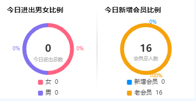
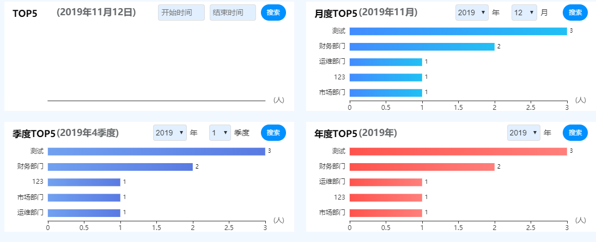

在这次的项目中图表显示的部分比较多，这边给分享下用到的图表的数据刷新

饼图最后的效果
先看下
前端部分
<div div style="height: 40%; width: 17.5%; background-color: white;
margin-top: 20px; float: left; border-left: black;" id="member">
</div>这是右边图的 echarts的html 一定要定义好大小
接下来是 js部分 先定义一个模板 官网有 自己稍加修改 （比较懒没加注释）
// 绘制会员量比例图表
var memberChart = echarts.init(document.getElementById('member'));
memberChart.setOption({
tooltip: {
trigger: 'item',
formatter: "{a} <br/>{b}: {c} ({d}%)"
},
legend: {
itemHeight: 10,
itemWidth: 10,
orient: 'vertical',
x: 'center',
y: 'bottom',
icon: 'roundRect',
formatter: function(name) {
var index = 0;
var clientlabels = ['新增会员','老会员'];
var clientcounts = [621,32032];
clientlabels.forEach(function(value,i){
if(value == name){
index = i;
}
});
return name + " " + clientcounts[index];
}
},
series: [
{
name:'男女比例',
type:'pie',
radius: ['45%', '53%'],
avoidLabelOverlap: false,
hoverAnimation: false,
data:[
{value:621, name:'新增会员'},
{value:32032, name:'老会员'},
],
itemStyle: {
normal:{
label:{
position : 'outside',
formatter: '{d}%',
fontSize: 10,
},
labelLine :{
length: 2,
length2: 2,
show:false,
}
}
}
}
],
color:['#0090FF','#F6A20C'],
title: {
subtext: '会员总人数',
text: '32653',
x: 'center',
y: 'center',
padding: 0,
itemGap: 0,
textStyle:{
fontSize: 20,
},
subtextStyle:{
fontSize: 10,
},
},
graphic: {
type: 'text',
style:{
x: 15,
y: 15,
font: 'bolder 1.2em "PingFang-SC-Medium", sans-serif',
text:'今日新增会员比例',
},
},
});因为 主副标题被我拿去显示不同数据了 所有用上了
graphic原生图形元素组件
接下来 看下 动态刷新数据的js
function reflushMember(data) {
memberChart.setOption({
legend: {
formatter: function(name) {
var index = 0;
var clientlabels = ['新增会员','老会员'];
var clientcounts = [data.newMemberCount, data.oldMemberCount];
clientlabels.forEach(function(value,i){
if(value == name){
index = i;
}
});
return name + " " + clientcounts[index];
}
},
series: [
{
data:[
{value:data.newMemberCount, name:'新增会员'},
{value:data.oldMemberCount, name:'老会员'},
],
}],
title: {
text:data.memberCount,
}
})
}主要就是把之前模板上的数据部分替换成 后台获取到的数据
饼图的刷新就到这里
还有个横向柱状图 其实都是差不多的 但是还是也看下吧
先看效果

这是4个横向柱状图 适应不同的搜索条件 就看下 月度top5的吧
<p id="monthTitle" style="position:absolute;margin-left: 18%;margin-top: 1.4%;
font: bolder 1.2em PingFang-SC-Medium sans-serif;"></p>
<div style="height: 100%;width: 100%;position:absolute;" id="monthArea"></div>P标签是那个 标题
// 绘制月度热力商圈图表
var monthAreaChart = echarts.init(document.getElementById('monthArea'));
monthAreaChart.setOption({
dataset: {
source: [
/* [58212, '小郡干串串'],
[78254, '钢管厂'],
[41032, '耐克'],
[12755, '金大福'],
[20145, '肯德基'],*/
]
},
/*grid: {containLabel: true},*/
xAxis: {name: '(人)',
show:true,
splitLine: {
show: false
}},
yAxis: {type: 'category',
axisLine:{show:false}, //坐标轴
axisTick:[{ //坐标轴小标记
show:false
}],
},
grid:{
height:'70%',
y2:20,
left:'15%',
},
series: [
{
textStyle:{
fontSize:10,
},
type: 'bar',
encode: {
// Map the "amount" column to X axis.
x: 'amount',
// Map the "product" column to Y axis
y: 'product'
},
/*barWidth: 10,*/
barGap:'70%',/*多个并排柱子设置柱子之间的间距*/
barCategoryGap:'50%',/*多个并排柱子设置柱子之间的间距*/
itemStyle: {
normal: {
color: new echarts.graphic.LinearGradient(0, 0, 1, 0, [{
offset: 0,
color: '#438CFF'
}, {
offset: 1,
color: '#20C0F4'
}]),
label: {
show: true, //开启显示
position: 'right', //在上方显示
textStyle: { //数值样式
color: 'black',
fontSize: 10
}
},
}
},
}
],
graphic: {
type: 'text',
style:{
x: 15,
y: 15,
font: 'bolder 1.2em "PingFang-SC-Medium", sans-serif',
text:'月度TOP5',
},
},上面是 横向柱状图 模板例子
var listTop5Result = result.listTop5Result;
for(var i = listTop5Result.length - 1; i >= 0; i--){
names.push(listTop5Result[i].deptName); //挨个取出类别并填入类别数组
}
for(var i = listTop5Result.length - 1; i >= 0; i--){
nums.push(listTop5Result[i].num); //挨个取出人次并填入销量数组
}
myChart.hideLoading(); //隐藏加载动画
myChart.setOption({ //加载数据图表
yAxis: {
data: names
},
series: [{
data: nums
}]
});上面是 动态获取 并要刷新的数据 和饼图不同的是 柱状图传进去的要是数组
以上就是我要分享的内容了
感谢
如果有什么错误 请多多指教！
2019-11-12 19:52:21